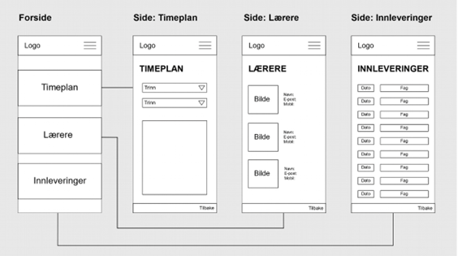

Fase 2: Designe/utforske
I fase 2 av webutvikling og UX går vi dypere inn i designkonseptet fra den første fasen. Hvor mye vi må gjøre i denne fasen avhenger av hvor kompliserte prosjektene er. Informasjonsarkitektur (IA), wireframes og prototyping – disse tre er viktige elementer for å skape strukturerte og brukervennlige opplevelser. De hjelper oss med å organisere informasjonen og gir oss et tidlig bilde av hvordan ting kommer til å se ut, samt lar oss teste det før det er ferdig.
Informasjonsarkitektur (IA) fokuserer på organisering og strukturen til informasjon i et system, med fokus på å gjøre det enkelt for brukere å finne og forstå informasjon. Dette er ekstra viktig da alle ønsker informasjon lett tilgjengelig og lett å forstå. Dette er noe større firmaer og nettsteder mestrer, noe som vises gjennom suksessen de har. Brukerreise er et annet sentralt begrep innenfor (IA). Dette innebærer forståelsen av hvordan brukere navigerer gjennom et system fra start til slutt. Dette er viktig for å oppdage svakheter i systemet og deretter optimalisere brukeropplevelsen.
Wireframes er en måte å designe nettsiden på. Du kan si at dette er et kart for designere når de skaper nettsider eller apper. Disse enkle tegningene skal vise hvor alle knapper, tekster og bilder skal plasseres. Her er ett eksempel:

(Wireframe skoleapp 3 nb, av Coelho, B. J T. Grolid S. Å)
Wireframes er viktig tidlig i designprosessen. Det lar teamet prøve ut nye ideer tidlig, finne ut av ting raskere, og samtidig diskutere hvordan ting skal se ut og fungere. Det hjelper med å lage en god plan for hvordan nettsiden og appen skal se ut og hvordan folk skal bruke den.
Prototyper er viktige når vi lager nye ting, spesielt digitale produkter, og vi lager dem før vi begynner å kode det endelige produktet. Disse prototypene er som våre tegninger som viser hvordan ting skal se ut og samtidig fungere. De hjelper oss med å forstå hva folk trenger og vil ha. Vi kan også være svært kreative med ideene våre her.
En stor grunn til at folk bruker prototyper er at de lar oss få tilbakemeldinger tidlig i prosessen. Dette er svært viktig, da det hjelper oss å spare penger, tid og ressurser. Enkelt forklart, en prototype dokumenterer vår forståelse av brukernes behov og våre ideer om utformingen av brukergrensesnittet.
Hvorfor lærer vi dette?
Læring om webutvikling og UX gir en rekke fordeler og muligheter, både for enkeltpersoner og organisasjoner. Webutvikling gir muligheten til å bygge nettsider og applikasjoner, mens UX-design fokuserer på å optimalisere brukernes interaksjon med disse digitale løsningene. Disse ferdighetene er svært attraktive i arbeidsmarkedet i dag og gir deg muligheten til å være kreativ, starte egne prosjekter og samtidig forstå hvordan teknologi påvirker vår digitale verden. Ved å kombinere webutvikling og UX kan man skape innovative og engasjerende digitale produkter.